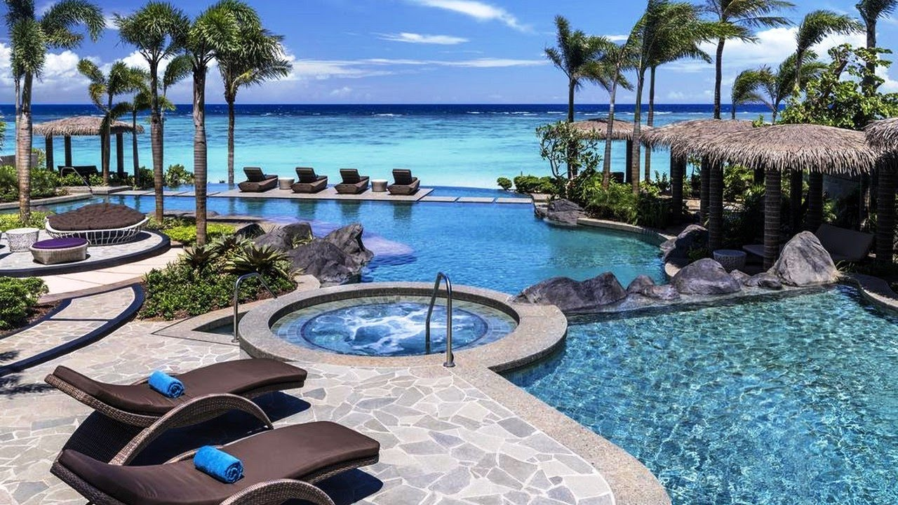

Guam Resort & Spa
Overlooking Tumon Bay, this upscale, beachfront resort hotel is 2 miles from UnderWater World Guam aquarium and 4 miles from the historic Plaza de Espana. Airy rooms feature Wi-Fi (fee), flat-screen TVs, sitting areas, and balconies or terraces. Upgraded rooms offer ocean views, exclusive lounge access and/or marble bathrooms. Suites add sitting areas.
There are 4 restaurants and 2 bars, some of which offer regular live entertainment. Other amenities include a cafe, a fitness room, and lagoon-style and infinity pools. Tennis courts and a kids' club are available. Guam to the natives also called "Guahan" is an island in the western North Pacific Ocean, about three-quarters of the way from Hawaii to the Philippines.
It is the largest and southernmost island in the Mariana Islands archipelago. Guam is a territory of the United States of America. It is considered to occupy a militarily strategic location, south of the Commonwealth of the Northern Mariana Islands. Guam is one of many islands that make up Micronesia, which politically consists of Belau (Palau), the Federated States of Micronesia (FSM), Kiribati (anthropologically having affinities with Polynesia and Micronesia), the Marshall Islands, and several remote islands designated as the US-administered islands of the Central Pacific. All of Micronesia has close political ties to the US.

Dusit Thani Guam Resort, Tumon, Guam
Dusit Thani Guam is a 5-star luxury resort elegantly fusing the richness of Thai history and hospitality into the heart of the Pacific. Just a short plane ride away from Asia’s main cities, it is the perfect destination for business and leisure travelers alike. Nestled along majestic Tumon Bay, breathtaking sunsets make for an unforgettable backdrop among the resort’s facilities and activities. Featuring panoramic views from its well-appointed rooms, suites and villas – all are finished with distinctive touches of Thai design throughout.
No stay is complete without retreating to the award-winning Devarana Spa renowned for authentic Thai healing therapies and western disciplines to offer a host of “east meets west” treatments. World-class products, fresh Thai herbs and indigenous ingredients on the island are used to create inspiring locally influenced selections.
An array of exquisite restaurants serve delicacies to satisfy any palate from fine-dining to family-style buffets with our signature restaurant SOI being a must-see for any Thai enthusiast. Surrounded in luxurious architectural design, Dusit Thani Guam Resort promises traditional Thai grandeur with modern influences, gracious hospitality and a genuine commitment to exceeding expectations.
Top